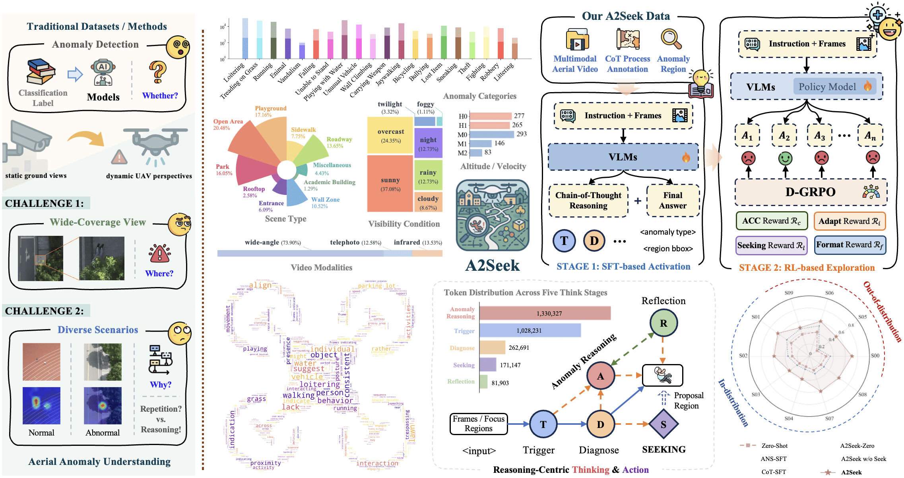
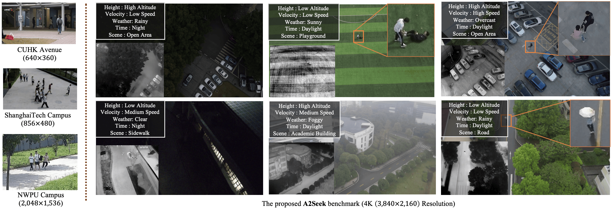
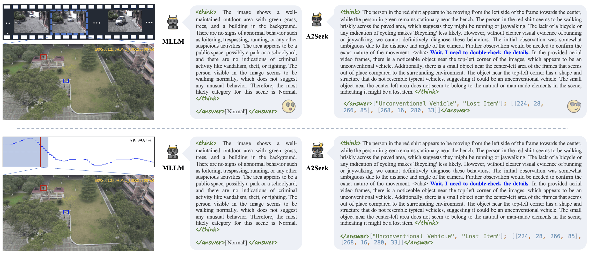
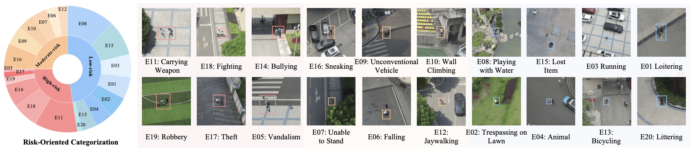
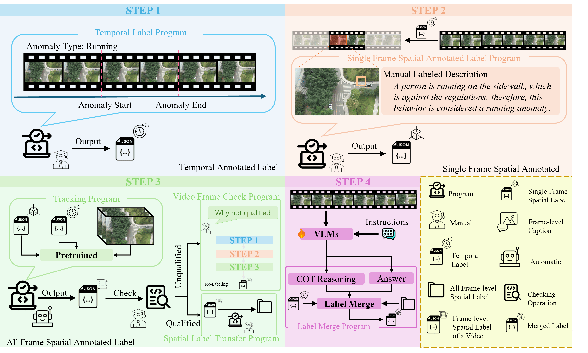

While unmanned aerial vehicles (UAVs) offer wide-area, high-altitude coverage for anomaly detection, they face challenges such as dynamic viewpoints, scale variations, and complex scenes. Existing datasets and methods, mainly designed for fixed ground-level views, struggle to adapt to these conditions, leading to significant performance drops in drone-view scenarios. To bridge this gap, we introduce A2Seek (Aerial Anomaly Seek), a large-scale, reasoning-centric benchmark dataset for aerial anomaly understanding. This dataset covers various scenarios and environmental conditions, providing high-resolution real-world aerial videos with detailed annotations, including anomaly categories, frame-level timestamps, region-level bounding boxes, and natural language explanations for causal reasoning. Building on this dataset, we propose A2Seek-R1, a novel reasoning framework that generalizes R1-style strategies to aerial anomaly understanding, enabling a deeper understanding of "Where" anomalies occur and "Why" they happen in aerial frames. To this end, A2Seek-R1 first employs a graph-of-thought (GoT)-guided supervised fine-tuning approach to activate the model's latent reasoning capabilities on A2Seek. Then, we introduce Aerial Group Relative Policy Optimization (A-GRPO) to design rule-based reward functions tailored to aerial scenarios. Furthermore, we propose a novel "seeking" mechanism that simulates UAV flight behavior by directing the model's attention to informative regions. Extensive experiments demonstrate that A2Seek-R1 achieves up to a 22.04% improvement in AP for prediction accuracy and a 13.9% gain in mIoU for anomaly localization, exhibiting strong generalization across complex environments and out-of-distribution scenarios.
(a) Challenges in aerial anomaly detection: Traditional methods rely on static surveillance views and focus mainly on classification, making it difficult to answer “Where” and “Why” anomalies occur under dynamic UAV perspectives.
(b) Dataset statistics on multiple dimensions.
(c) Reasoning pipeline: The method consists of two stages—SFT (supervised fine-tuning) for reasoning activation, and RL (reinforcement learning) for dynamic reasoning.
(d) High-frequency words of the dataset.
(e) Reasoning process: The framework integrates multiple reasoning stages (Trigger, Diagnose, Reasoning, Reflection, Seeking), emphasizing reasoning-driven anomaly understanding.
(f) Performance comparison.

Main Challenges of the A2Seek Dataset
Left: fixed-view surveillance datasets. Right: diverse aerial views in A2Seek.

Beyond predicting anomaly categories, our method provides reasoning traces and accurately localizes the key regions that support its judgment.

Comparison video from A2Seek-R1.
Our dataset covers a broad spectrum of anomalous behaviors across different risk levels, highlighting the diversity and complexity of aerial anomaly detection.

Step 1 (blue): Temporal annotators mark the start/end frames and class of every anomalous episode, exporting a JSON timeline.
Step 2 (salmon): For the first frame of each event, experts draw a bounding box around the anomalous region and supply a natural-language description.
Step 3 (green): A pretrained tracker propagates each seed through the clip; an automated checker screens and funnels approved tracks into the spatial-label repository.
Step 4 (violet): Vision-language models ingest temporal tags, spatial tracks, and human captions; via chain-of-thought reasoning, they merge these cues into consolidated frame-level annotations.

If you find A2Seek helpful, we'd appreciate a ⭐ Star or a citation to our paper:
@inproceedings{NEURIPS2025_de02de51,
author = {Mo, Mengjingcheng and Tong, Xinyang and Tan, Mingpi and Leng, Jiaxu and Zheng, JianKang and Liu, Yiran and Chen, Haosheng and Gan, Ji and Li, Weisheng and Gao, Xinbo},
booktitle = {Advances in Neural Information Processing Systems},
doi = {10.52202/085713-5057},
editor = {D. Belgrave and C. Zhang and H. Lin and R. Pascanu and P. Koniusz and M. Ghassemi and N. Chen},
publisher = {Curran Associates, Inc.},
title = {A2Seek: Towards Reasoning-Centric Benchmark for Aerial Anomaly Understanding},
url = {https://proceedings.neurips.cc/paper_files/paper/2025/file/de02de513503962e1d21035ab50ce661-Paper-Datasets_and_Benchmarks_Track.pdf},
volume = {38, Main Conference},
year = {2025}
}